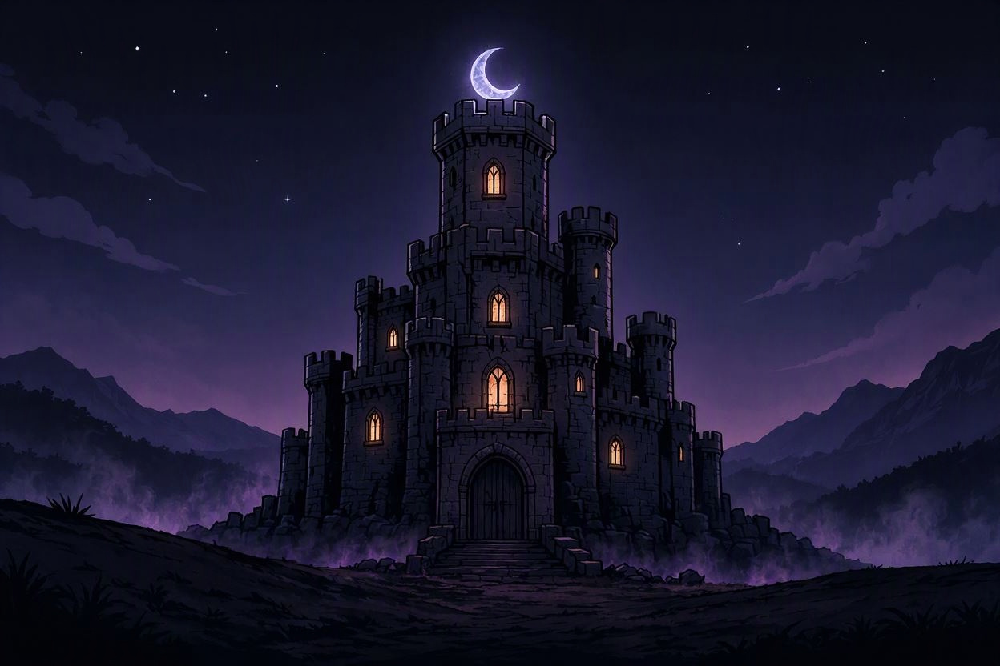

Chapter VI - The Fortress of Malachar

You have reached the Fortress of Malachar. It is everything the stories warned you would be — a monstrous structure of black stone and iron, its towers piercing the storm clouds like spears aimed at the heavens. Dark magic crackles in the air, and the very ground seems to writhe beneath your feet.
Guards patrol the walls — undead soldiers, their eyes empty, their movements mechanical. They feel no pain, no fear, no mercy. The Superlord's will drives them like puppets on invisible strings.
You spot three possible ways inside. The main gate is heavily guarded but straightforward. A hidden passage — perhaps a drainage tunnel or forgotten postern — is partially concealed by rubble on the fortress's eastern side. And you could create a distraction to draw the guards away from another entry point.
Inside these walls, your spouse is waiting. And so is the Superlord.
How do you enter the fortress?